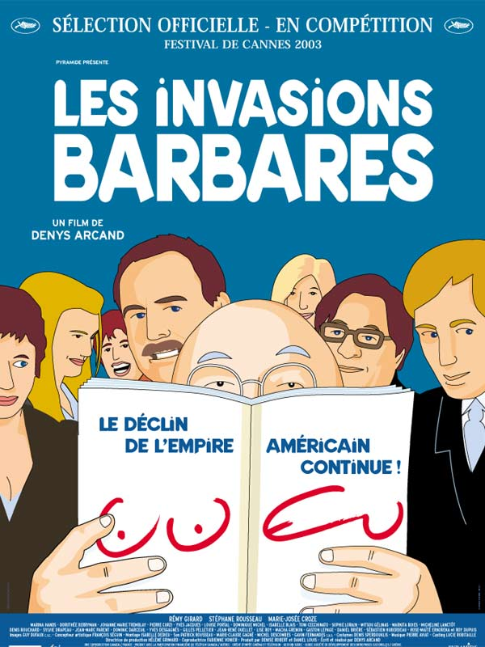

 Ficha Técnica: Estrenada en: Julio 1983 Director: Denys Arcand Actores: - Rémy Girard - Stéphane Rousseau - Marie-Josée Croze - Dorothée Berryman Related Films: El declive del imperio americano La Edad de la Ignorancia Stardom Joyeux Calvaire De l'amour et des restes humains